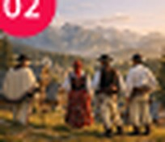
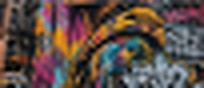

02 Mains et traditions Culture & Traditions 35 €/ pers
03 Graffitis, fort et fantômes Street & Art 26 €/ persVarsovien de cœur, je suis passionné d'art urbain. Je connais les fresques cachées derrière les porches et les artistes du quartier. Avec moi, tu découvres la ville comme un habitant, loin des circuits touristiques.
Né à Praga, le quartier artiste de la rive droite, j'ai grandi entre les vieilles cours d'immeubles et les ateliers. Après des études d'histoire de l'art, j'ai commencé à faire visiter ma ville à des amis étrangers… et je ne me suis jamais arrêté.
Mes visites se font à ton rythme, toujours avec une pause gourmande : pierogi, pączki ou café dans mon bar à lait préféré.
Marek connaît chaque cour cachée de Varsovie ! Visite passionnante, je recommande à 100 %.
Super guide, drôle et très cultivé. Il nous a même présenté un artiste du quartier. On a vraiment vu la ville comme un habitant.
Parfait pour les amoureux d'art urbain. Marek parle très bien français.
Marek t'attend demain à 9h30
Réservation confirmée pour 2 personnes
Circuit 03 · Graffitis, fort et fantômes
Justificatif envoyé par e-mail.